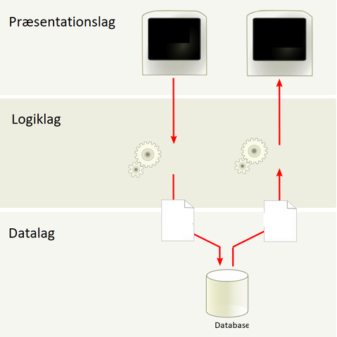

Gruppen i dette projekt var lille, da Ea dibsede mig. Så blev det kun os to, hvilket viste sig at være meget praktisk.
Formålet var at lave en fungerende 3-lags arkitektur i vores html og css. Derudover skulle den have det lille formål at folk kunne finde venner til deres dyr.

Præsentationslag:
I et 3-lags arkitektur er der er præsentationslager, et logiklager og et datalager.
Præsentationslageret er hvor selve produktet bliver præsenteret på. Dette er ofte på en
hjemmeside, en app på en telefon, eller andre måder at fremvise et produkt på. Den kommunikerer
med logiklageret ved HTTPS Hyper Text Transfer Protocol Secure. Den bliver brugt på World Wide
Web (WWW) hvor hjemmesider ofte bliver hosted igennem.
Logiklag
Logiklageret foretager logiske beregninger og henter informationer fra præsentationslaget
og data fra data laget. Derudover laver det også beregninger og andre manipulationer på dataerne
fra data laget.
Datalag
Datalager er hvor alt den data der bliver indsamlet fra hjemmesiden, er opbevaret. Dette, i
vores projekt, blev gjort igennem MongoDB, hvor man skulle lave en Collection, og derefter connect
det til selve logiklageret. Dette virket ikke så godt for os, men under formål skriver vi mere om hvad
vi gerne ville havde collected af data til vores hjemmeside.
⬅ Her har vi et eksempel på et Entity Relationship Diagram af hvordan det skulle havde været til slut i forløbet.
Denne her kunne havde blevet lavet bedre ved at have en Entity diagram der connecter the animals og users der siger
ja eller nej ved brug af en foreign key.
Det de hovedsageligt kunne havde blevet gjort bedre var de metoder vi brugt i selve vores kode. GET, POST, DELETE og UPDATE. Hvis vi havde haft en bedre forståelse af selve koden og hvordan alting virket, ville vi kunne havde opfyldt vores formål af at få folk til at tælle hver gang de klikker på fotoet af selve dyrene.